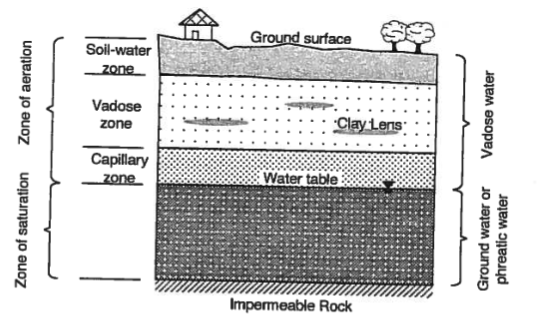

2. Fundamentals I#
This chapter presents a scientific and practical framework that explains what makes groundwater transport complex, introduces (without extensive derivations) governing equations, scales, and parameters, and emphasizes conceptual foundations and dimensional reasoning.
Course Website
%%html
<style> table {margin-left: 0 !important;} </style>
Readings#
Videos#
None
Spreadsheets/Programs/Data#
None
Essential Groundwater Review#
This essential review of groundwater should remind the reader of important aspects of:
Introduction to Groundwater including: A definition of groundwater, the importance of groundwater as a natural resource, and the distinction between surface water and groundwater.
Aquifers and Aquitards including: An explanation of aquifers and their properties, the role of aquitards in groundwater containment, types of aquifers (unconfined, confined, etc.).
Groundwater Movement: Darcy’s Law and groundwater flow, factors influencing groundwater flow rates, flow patterns in aquifers (radial flow, regional flow, etc.)
Groundwater Storage and Recharge: Methods of groundwater recharge, Groundwater storage and water table fluctuations, Sustainable groundwater management
Groundwater Flow Modeling: Overview of groundwater flow modeling, application of numerical models (MODFLOW, FEMWATER, etc.), use of models for aquifer characterization and contamination prediction
Groundwater Extraction and Wells: Types of groundwater wells (e.g., artesian wells, extraction wells), pumping tests and their significance, groundwater extraction for drinking water, remediation, and irrigation.
Porous Media#
Porous media refers to a class of materials that have interconnected void spaces or pores, allowing the flow and transport of fluids. In the context of groundwater, porous media plays a crucial role as it forms the subsurface medium through which water flows and contaminants can be transported. The properties and characteristics of the porous media significantly influence the movement of groundwater and the fate of contaminants within an aquifer.
Two fundamental properties govern behavior of fluids in a porous media:
The porosity, which represents the volume of void spaces within the material, determines the storage capacity for fluid within the porous media and affects the flow rate. Porous media with high porosity can concievably store more water, but it may also delay movement of groundwater because of reduced size of individual pores.
Usually, the void space is made up of two parts: an interconnected portion, through which a fluid can move from any point to any other point within this portion, and a non-interconnected portion. A fluid present in the latter portion of the void space cannot leave it, except by crossing solid phase boundaries. Because we are interested primarily in the transport of mass of fluid phases and chemical species within the void space, unless otherwise specified, we shall use the term porosity to indicate only the interconnected portion of the void space. The terms interconnected porosity and effective porosity are sometimes used for this purpose.The permeability, which describes the ease with which fluids can flow through the porous media, depends on factors such as pore size, shape, and connectivity. High-permeability materials, like coarse sand or gravel, allow water to flow more easily, whereas low-permeability materials, like clay or silt, impede water movement. Permeability influences the speed and direction of groundwater flow, as well as the potential for contaminants to migrate through the aquifer.
Porous media also exhibits heterogeneity, meaning it can have spatial variations in these fundamental properties. This heterogeneity arises from geological processes, such as sediment deposition, compaction, and tectonic activity. Variations in porosity and permeability within a porous medium lead to complex flow patterns, preferential flow paths, and the potential for localized contaminant accumulation or dispersion. Understanding the heterogeneity of porous media is crucial for accurately predicting groundwater flow and contaminant transport.
(from Bear 1972) “A porous medium domain is said to be homogeneous if its permeability is the same at all its points. Otherwise, the domain is said to be heterogeneous (or inhomogeneous). Most subsurface domains are highly heterogeneous. The heterogeneity of the subsurface is a consequence of the way the latter has been shaped and reshaped over millions of years by geological processes.
When the permeability at a considered point is independent of direction, the medium is said to be isotropic at that point. Similar considerations apply to the hydraulic conductivity, K, and to the transmissivity, T, of an aquifer; in the latter case, the considered directions are only in the xy plane. In many cases, aquifers are anisotropic, with the vertical permeability being higher than the horizontal one. This may happen, for example, when the sediments comprising the aquifer are such (e.g., flat shaped mica particles) that when deposited, the resulting porous medium has a higher permeability in one direction (usually the horizontal one, unless later tilting of the formation occurs) than in other directions. Both sedimentation and pressure of overlying material cause flat particles to be oriented with their longest dimension parallel to the plane on which they settle. Later this produces flow channels parallel to the bedding plane, which are different from those oriented normal to this plane, thus rendering the medium anisotropic. If the flow through a formation takes place in some predominant direction over prolonged periods of time, it may produce a more developed network of channels parallel to that direction by removing fine material. In carbonate rocks, flowing water may dissolve the rock, producing solution channels beginning as very thin fissures in the direction of the predominant flow. In some soils, structural fissures develop more readily in one direction than in others, and the soil will exhibit anisotropy. In certain rocks, fractures produce a very high permeability in the direction of the fractures. All these circumstances contribute to anisotropy in permeability.
Interactions between fluids and porous media involves various physical and chemical processes. Advection, the bulk movement of groundwater, is influenced by the permeability and hydraulic gradient. Dispersion, the spreading of solutes due to molecular diffusion and mechanical mixing, occurs as water moves through the porous medium. Adsorption refers to the attachment of contaminants to the solid surfaces of the porous media, affecting their mobility and persistence. These processes, along with others like biodegradation and chemical reactions, shape the fate and transport of contaminants in groundwater.
Saturated Zone#
The saturated zone refers to the region within the subsurface where all the available pore spaces are filled with water, creating a saturated condition. It is an important concept in groundwater hydrology and plays a crucial role in groundwater flow and contaminant transport.
The saturated zone begins at the water table, which represents the boundary between the unsaturated zone (where there is both air and water in the pore spaces) and the saturated zone (where all pore spaces are filled with water). The depth of the saturated zone can vary depending on factors such as topography, geology, and seasonality.

Within the saturated zone, groundwater flow occurs as water moves through the interconnected pore spaces under the influence of gravity. The direction and speed of groundwater flow are governed by hydraulic gradients, which are the differences in hydraulic head (a measure of the potential energy of groundwater) between different locations. The saturated zone acts as a conduit for the movement of water from areas of higher hydraulic head to areas of lower hydraulic head.
The properties of the saturated zone, such as its permeability, porosity, and heterogeneity, have a significant impact on groundwater flow. Permeability determines how easily water can move through the saturated zone. Materials with high permeability, like gravel or sand, allow for faster groundwater flow, while low-permeability materials, such as clay or shale, impede flow. Porosity, the volume of void spaces, determines the amount of water that can be stored in the saturated zone.
Heterogeneity in the saturated zone refers to variations in the properties of the porous medium, such as permeability and porosity, over space. This heterogeneity can influence the flow of groundwater by creating preferential flow paths or areas of localized flow convergence or divergence. Understanding the heterogeneity of the saturated zone is important for accurate modeling and prediction of groundwater flow patterns.
Contaminant transport also occurs within the saturated zone. Once contaminants enter the groundwater system, they can be transported through the interconnected pore spaces. The movement of contaminants is influenced by factors such as advection (bulk movement of groundwater), dispersion (spreading of contaminants due to mechanical mixing and molecular diffusion), and sorption (attachment of contaminants to solid surfaces). The saturated zone acts as a medium for the migration and dispersion of contaminants, and its properties influence the rate and extent of contaminant transport.
Unsaturated Zone#
The unsaturated zone, also known as the vadose zone or the zone of aeration, is the region within the subsurface where the pore spaces contain both air and water. In this zone, the water content is less than the total porosity of the material. The unsaturated zone extends from the land surface down to the water table, where it transitions into the saturated zone.
The unsaturated zone is characterized by a dynamic water content profile that changes over time due to factors such as precipitation, evaporation, and plant uptake. At the land surface, water infiltrates through the soil and rock layers until it reaches a point where the pore spaces are completely saturated. This point is known as the water table, which marks the transition to the saturated zone.
The movement of water in the unsaturated zone is influenced by capillary forces and gravity. Capillary forces cause water to rise in small pores against the force of gravity, allowing it to be retained in the unsaturated zone. The rate of water movement through the unsaturated zone is generally slower compared to the saturated zone due to the presence of air and the lower hydraulic conductivity of unsaturated materials.
The unsaturated zone plays a crucial role in controlling the recharge of groundwater. It acts as a buffer, allowing for the filtration, storage, and gradual release of water to the underlying aquifer. The unsaturated zone also contributes to the purification of water through processes such as filtration, adsorption, and biodegradation as water percolates through the soil and rock layers.
In terms of contaminant transport, the unsaturated zone can act as a barrier or filter, reducing the potential for contaminants to reach the groundwater system. The unsaturated materials can adsorb or retain contaminants, and the slower movement of water through this zone provides additional time for degradation or removal of contaminants.
Aquifers#
An aquifer is a geologic formation that (i) contains and (ii) transmits water in economically useful quantities under normal field conditions.
Some related terms include:
An aquitard is a geologic formation or layer that has low permeability, restricting the flow of groundwater. It acts as a barrier or confining layer that limits the movement of water between aquifers. Unlike aquifers, which are capable of storing and transmitting water, aquitards have a lower hydraulic conductivity, impeding or retarding the flow of groundwater. Aquitards can consist of various materials such as clay, silt, shale, or unconsolidated sediment, which offer limited pathways for groundwater movement. They play a crucial role in groundwater systems by confining and isolating aquifers, influencing groundwater storage, and controlling the vertical movement of water.
An aquifuge is a geologic formation or layer that is essentially impermeable to groundwater flow. Unlike aquitards, which have limited permeability, aquifuges are completely impermeable, meaning they do not allow the movement of water. Aquifuges act as barriers that prevent the flow of groundwater between aquifers and restrict the vertical or lateral movement of water. They are typically composed of dense and impermeable materials such as unfractured bedrock, solid clay, or thick layers of compacted till. Aquifuges are important in groundwater hydrology as they create boundaries or seals that confine and isolate aquifers, preventing the intermixing or contamination of groundwater between different layers.
An aquiclude is a geologic formation or layer that is completely impermeable to groundwater flow. It is similar to an aquifuge in that it acts as a barrier to the movement of water, but it differs in that it is typically much thicker and more extensive. Aquicludes are composed of highly impermeable materials, such as solid rock or dense clay, which do not allow water to pass through them. They effectively impede the flow of groundwater and can serve as long-lasting barriers between aquifers. Aquicludes are important features in groundwater systems as they help confine and isolate aquifers, preventing the vertical or lateral movement of water and maintaining the integrity of groundwater resources.
Aquifers are typically categorized as confined or unconfined; these two types of aquifers that differ in their geological characteristics and water storage conditions.

Definition:
Confined Aquifer: A confined aquifer, also known as an artesian aquifer, is an aquifer that is bounded above and below by impermeable layers, such as clay or dense rock, which confine the groundwater within a confined space.
Unconfined Aquifer: An unconfined aquifer, also called a water table aquifer, is an aquifer where the upper boundary, known as the water table, is not confined by an impermeable layer, allowing water to freely move up and down through the aquifer.
Recharge:
Confined Aquifer: Confined aquifers are typically recharged in areas where the confining layers are absent or fractured, allowing water to infiltrate from the surface. Recharge to confined aquifers can be more limited and localized.
Unconfined Aquifer: Unconfined aquifers are primarily recharged through precipitation, where water percolates through the unsaturated zone until it reaches the water table. Recharge to unconfined aquifers can occur over larger areas.
Water Storage and Pressure:
Confined Aquifer: Due to the confining layers, water in confined aquifers is under higher pressure and can be stored under artesian conditions. When a well is drilled into a confined aquifer, the water may rise above the ground level due to the pressure exerted by the confined aquifer.
Unconfined Aquifer: Water in unconfined aquifers is not under significant pressure and is stored under the water table. The height of the water table fluctuates based on factors such as recharge rates, extraction, and seasonality.
Vulnerability to Contamination:
Confined Aquifer: Confined aquifers are generally less vulnerable to contamination compared to unconfined aquifers. The presence of confining layers acts as a barrier, limiting the potential for contaminants to infiltrate the aquifer.
Unconfined Aquifer: Unconfined aquifers are more susceptible to contamination as there is no confining layer to impede the movement of contaminants. Contaminants can more easily reach the water table and potentially affect the groundwater quality.
Extraction and Well Productivity:
Confined Aquifer: Extraction of water from a confined aquifer typically yields higher well productivity due to the increased pressure within the aquifer. Wells drilled into confined aquifers can have a steady and sustained water supply.
Unconfined Aquifer: Extraction from unconfined aquifers may yield variable well productivity depending on the fluctuating water table. The yield of wells in unconfined aquifers may be influenced by seasonal variations in recharge and the proximity to other water sources.
A leaky aquifer refers to an aquifer that exhibits characteristics of both an aquifer and an aquitard. It is a geological formation that has varying degrees of permeability and acts as a partial barrier to the flow of groundwater. In a leaky aquifer, the presence of semi-permeable layers or zones with lower permeability allows some water to pass through, while also impeding or retarding the flow to some extent.
Leaky aquifers are distinct from fully confined aquifers or unconfined aquifers, as they possess intermediate characteristics. They can be seen as “leaky” due to the reduced hydraulic conductivity of the semi-permeable layers present within the aquifer system. These semi-permeable layers act as partial barriers, restricting or slowing down the movement of groundwater between different zones or layers.
The presence of leaky aquifers can have significant implications for groundwater management and hydrogeological assessments. They can influence the flow paths, distribution, and quality of groundwater within an aquifer system. Understanding the extent and properties of leaky aquifers is crucial for accurately modeling groundwater flow, assessing contaminant transport, and managing water resources effectively.
Storage#
Storativity is the amount of water added to/released from storage per unit change in head per unit area of aquifer. Mechanisms of storage are draining and filling of the pore space (unconfined) and compression/decompression of the solid matrix and water (confined).
In confined aquifers the storage coefficient is denoted by the symbol \(S\). In unconfined aquifers the storage coefficient is the specific yield and is denoted by \(S_y\). The amount remaining is called the specific retention \(S_r\). The sum of these two terms is the porosity.
Transport (of Water)#
The ability to convey water is measured by the permeability, in the case of water it is called the hydraulic conductivtiy. It is a combined property of porous media properties and fluid properties, the usual symbol is \(K\).
Note
The hydraulic conductivity for porous media plays the same role as the friction factor in pipe flow, which is also a combined property of pipe material and fluid properties.:::
The ability of an entire thickness of aquifer to transmit water is called the transmissivity; the usual symbol is \(T\)
Darcy’s Law#
Darcy’s Law is a fundamental principle in hydrogeology that describes the movement of groundwater through porous media and its transport of contaminants. It provides a mathematical relationship between the flow rate of groundwater, the hydraulic gradient, and the properties of the porous medium.
In the context of groundwater flow, Darcy’s Law states that the flow rate of groundwater (Q) is directly proportional to the hydraulic conductivity (K) of the porous medium, the cross-sectional area perpendicular to the flow (A), and the hydraulic gradient (∇h) along which the groundwater is moving. Mathematically, it can be expressed as:
\(Q = -K * A * \nabla h\)
Here, the negative sign indicates that groundwater flows from higher hydraulic head (pressure) to lower hydraulic head.
Note
Darcy’s law is typically extended into 3 spatial dimensions, then used as the equation of motion in the continunity equation, to construct the various equations of groundwater flow.
Overall, Darcy’s Law serves as a cornerstone in groundwater hydrology and contaminant transport studies, providing a quantitative basis for understanding and modeling the behavior of groundwater flow and mass transport in various geological settings.
Pore Velocity#
Pore velocity, in the context of groundwater flow, refers to the speed at which water molecules move through the interconnected void spaces (pores) within a porous medium, such as soil or rock. It is a measure of the actual velocity of water within these tiny channels and cavities, which collectively form the pathways for groundwater movement.
Pore velocity is influenced by several factors, including the hydraulic gradient (the change in hydraulic head per unit distance), the hydraulic conductivity of the porous medium (which dictates how easily water can flow through it), and the porosity of the material (the volume of pore space compared to the total volume of the material). Additionally, the degree of saturation and the properties of the fluid itself also play a role in determining pore velocity.
Understanding pore velocity is crucial for assessing groundwater flow rates, transport of contaminants, and the overall behavior of groundwater within subsurface formations. It helps hydrogeologists and scientists model and predict the movement of groundwater and the transport of dissolved substances, providing valuable insights into water resource management, environmental impact assessment, and remediation efforts.
In actual measurement, for example, in a laboratory porous medium column, the specific discharge (also called the Darcy velocity), \(q=\frac{Q}{A}\), is measured as the volume of water passing through a unit cross-sectional area of the column, per unit time. The hydraulic conductivity is then interpreted on the basis of such area averaged measurement.
However as depicted above only a portion of the cross sectional area is open (liquid phase), the remainder is solid. The pore velocity is the velocity of the actual liquid parcels required to satisfy continunity for the section. In the above figure\[v_{pore} = \frac{q}{n} = \frac{Q}{nA}\]The pore velocity is the speed at which constituients transported by advection would travel, hence its obvious importance.
Warning
At one of my first jobs, I forgot to divide the discharge by the porosity so the subsequent travel times were way off (favorable for landfill operator, but wrong). At some point I realized the mistake and made the correction(s). But its easier to just do it right the first time.
Anisotropy#
Anisotropy (already mentioned above) in the context of groundwater flow refers to the property of subsurface materials that causes the flow of groundwater to exhibit varying degrees of preferential directionality. In other words, the hydraulic conductivity of the underground formation is not the same in all directions. This anisotropic behavior is often observed in geological formations composed of layered or oriented materials such as sedimentary rocks, fractured bedrock, or layered aquifer systems.
Anisotropy can significantly impact the movement of groundwater. When the hydraulic conductivity is higher in one direction compared to another, groundwater will tend to flow more readily along the path of least resistance, following the direction of higher conductivity. This can lead to uneven flow patterns and the development of preferential flow pathways within the subsurface.
Understanding anisotropy is crucial for accurate modeling and prediction of groundwater movement and contaminant transport. Groundwater flow simulations must account for anisotropic behavior to effectively predict the direction and rate of groundwater flow, as well as the dispersion and spread of contaminants through the subsurface. Neglecting anisotropy can lead to inaccurate predictions and improper management of groundwater resources and contamination issues.
Principal Directions of Hydraulic Conductivity#
To determine the principal values of the hydraulic conductivity tensor in 2D, you would typically follow these steps:
Define the Hydraulic Conductivity Tensor: The hydraulic conductivity tensor represents the anisotropic properties of the subsurface material in terms of its ability to transmit water. In 2D, the hydraulic conductivity tensor is a symmetric matrix with three components: Kxx, Kyy, and Kxy (or Kyx). Kxx represents the hydraulic conductivity in the x-direction, Kyy represents the hydraulic conductivity in the y-direction, and Kxy (or Kyx) represents the cross-component.
Formulate the Hydraulic Conductivity Matrix: Arrange the components of the hydraulic conductivity tensor into a 2x2 matrix, typically denoted as [K]. In matrix form, the hydraulic conductivity tensor for 2D becomes:
Solve for Eigenvalues: Determine the eigenvalues of the hydraulic conductivity matrix [K]. Eigenvalues represent the principal values of the matrix and provide information about the directional properties of the hydraulic conductivity tensor.
Calculate Principal Values: The eigenvalues of the hydraulic conductivity matrix [K] correspond to the principal values of the hydraulic conductivity tensor. These principal values represent the maximum and minimum hydraulic conductivities in the directions determined by the corresponding eigenvectors.
Interpret the Results: The principal values of the hydraulic conductivity tensor provide insights into the anisotropic nature of fluid flow in the subsurface. The larger eigenvalue corresponds to the direction of maximum hydraulic conductivity, while the smaller eigenvalue represents the direction of minimum hydraulic conductivity.
Obtaining accurate values for the hydraulic conductivity components involves field measurements and laboratory testing of soil or rock samples.
In 3D the determination is simply the natural extension of the 2D process. The matrix (tensor) is
Exercise(s)#
# autobuild exercise
import subprocess
try:
subprocess.run(["pdflatex", "ce5364-es1-2025-3.tex"],
stdout=subprocess.DEVNULL, stderr=subprocess.DEVNULL, check=True)
except subprocess.CalledProcessError:
print("Build failed. Check your LaTeX source file.")